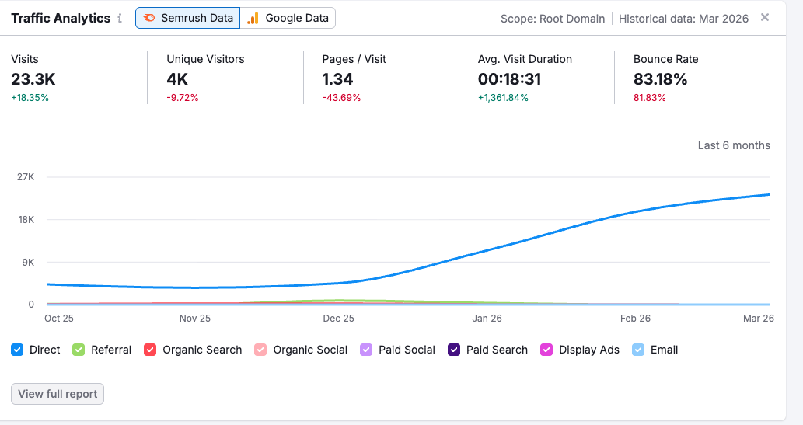

סיכום ביצועי הקידום האורגני, מינואר עד מאי 2026. תנועה, מיקומים, פרופיל תוכן ותוכנית ההמשך לחודשים הקרובים, בדף אחד.
לפני שצוללים למספרים, חשוב להבין במה מדובר. התחום של supply chain הוא אחד התחרותיים בעולם ה-B2B הדיגיטלי, והתחרות הישירה היא מול שחקנים של אמת.
אתרי ENTERPRISE ותיקי תעשייה עם נוכחות דיגיטלית של עשור עד עשרים שנה. אתרים עם מאות אלפי עמודים, אלפי מאמרים, ומאגר לינקים עמוק מהמוניטורים הגדולים בעולם. הם מממנים תוכן אורגני בתקציבים מהותיים, ולפעמים מעסיקים צוותי תוכן שלמים.
קידום בקטגוריה הזו אינו קמפיין טקטי. זה תהליך מתמשך שמתגלגל חודש אחר חודש. מילה שהיום במקום 50 תגיע לעמוד הראשון תוך כמה חודשים, ולא בזכות מזל, אלא בזכות תוכן ולינקים מצטברים לאורך זמן. זו לא ספרינט, זה מרתון.
למרות הכל, ארבעת החודשים האחרונים הראו תזוזה ממשית במיקומים, כניסה לתוצאות מנועי AI, ועליה בתנועה האורגנית. התקדמות הזו אמיתית בדיוק כי היא מול מי שהיא.
ארבעה חודשי קידום הניבו צמיחה רציפה בתנועה האורגנית, מעבר של מילות מפתח ליבה לעמוד הראשון, וכניסה לתוצאות של מנועי תשובות מבוססי AI.
השיא במדדי ההתנהגות (משתמשים, זמן ממוצע) נרשם בפברואר-מרץ. במהלך מרץ ראינו האטה זמנית הקשורה לקצב פרסומי התוכן (פירוט בפרק 10). אפריל-מאי חוזרים לעלייה במדד Pages/Session.
העקומה של Semrush מציגה צמיחה רציפה לאורך 6 חודשים, עם תאוצה ברורה החל מנובמבר 2025. הציר העיקרי הוא Organic Search.

העלייה הדרמטית בזמן השהייה הממוצע מצביעה על תנועה איכותית יותר. המבקרים שמגיעים אורגנית מבלים זמן ארוך יותר באתר ביחס לתקופה הקודמת.
טבלת התקדמות עבור מילות הליבה במעקב, בשלוש נקודות זמן: 01/03 · 05/04 · 03/05.
| Keyword | 01/03 | 05/04 | 03/05 | שינוי | AI |
|---|---|---|---|---|---|
| cargo risk management platform | 3 | 3 | 1 | ▲ 2 | ● |
| 24/7/365 Escalation Center | 100+ | 100+ | 1 | ▲ 99 | ● |
| The Economics of Supply Chain Visibility | · | · | 1 | ▲ נכנסה למקום 1 | ● |
| american supply chain summit 2025 | 6 | 5 | 3 | ▲ 3 | |
| american supply chain summit | 17 | 9 | 5 | ▲ 12 | |
| american supply chain | 100+ | 50+ | 5 | ▲ 95 | |
| supply chain visibility example | 9 | 7 | 7 | ▲ 2 | |
| visibility into supply chain logistics | · | 33 | 31 | ▲ נכנסה ועלתה | |
| visibility supply chain management | 58 | 58 | 54 | ▲ 4 | |
| supply chain visibility cost | 60 | 60 | 60+ | ללא שינוי |
שלוש מילים שעברו קפיצה משמעותית בחודש האחרון, סביב עמודי ליבה של האתר.
קפיצה ממיקום נחות לעמוד הראשון. עמוד מרכז הבקרה הוא נכס אסטרטגי.
מונח קטגוריה חזק שעלה לעמדה ראשונה. מקור תנועה איכותי לטווח ארוך.
חציית עמוד ראשון לראשונה. עוד יש מקום לעלות, אבל הכיוון ברור.
ההזנקות נובעות מעבודה ממוקדת על תוכן ועל עמודי הליבה. ככל שמושקע תוכן רלוונטי בעמוד מסוים, המיקום שלו זז.
ארבעת מונחי הליבה שנבדקו מופיעים כתוצאה במנועי תשובות מבוססי AI. הקידום האורגני של 2026 כולל גם להיות מצוטט במקום שבו המשתמשים שואלים.
פילוח חודשי של משתמשים, משתמשים חדשים, משך סשן ממוצע ודפים-לסשן לאורך חמשת חודשי הקידום.
| מטריקה | 12 → 01 | 01 → 02 | 02 → 03 | 03 → 04 | 04 → 05 |
|---|---|---|---|---|---|
| משתמשים | 152 | 164 | 182 | 134 | 142 |
| משתמשים חדשים | 73 | 114 | 106 | 80 | 81 |
| משך סשן ממוצע | 2:10 | 2:13 | 2:17 | 0:56 | 1:41 |
| דפים לסשן | 1.39 | 1.47 | 1.45 | 1.13 | 1.51 |
השיא נרשם בפברואר-מרץ עם 182 משתמשים ו-2:17 זמן ממוצע. הירידה במרץ-אפריל קשורה ישירות לקצב פרסומי התוכן בחודש מרץ. ראו פירוט בפרק 10. במדד Pages/Session אפשר לראות שהאתר חוזר לעלייה במאי (1.51).
איפה התנועה האורגנית נוחתת בפועל, ואיך כל דף מתפקד מבחינת איכות הסשן (דפים לסשן). תקופה: 01/03 → 01/05.
| דף נחיתה | משתמשים | דפים לסשן |
|---|---|---|
| Home Page | 144 | 3.39 |
| Supply Chain Management Solutions | 65 | 1.00 |
| Technology | 61 | 1.53 |
| Resources | 48 | 3.20 |
| Supply Chain Risk Management | 26 | 1.44 |
| About Us | 11 | 1.82 |
| Pharma & Cosmetics Cold Chain | 8 | 144.0 |
Home + Resources מובילים גם בכמות וגם באיכות הסשן (3.2-3.4 דפים לסשן). הדף של Pharma Cold Chain מציג מטריקה חריגה במיוחד: מספר קטן של מבקרים שעוברים בממוצע 144 דפים בכל סשן, סימן לכניסות עומק של משתמשים מקצועיים.
המילים האסטרטגיות שאליהן מכוונת תוכנית התוכן, מסודרות לפי נפח חיפוש חודשי ממוצע.
רשימה של מילות מפתח שכבר נמצאות במיקום 1-10 בגוגל, עם המיקום הנוכחי ונפח החיפוש החודשי הממוצע. בקצרה, אלה המילים שכבר מביאות תנועה אורגנית עכשיו.
| Keyword | מיקום | נפח חיפוש |
|---|---|---|
| end to end supply chain visibility | 1 | 590 |
| end to end visibility in supply chain | 1 | 480 |
| end-to-end visibility in supply chain | 1 | 390 |
| global logistics visibility | 1 | 210 |
| end to end visibility supply chain | 2 | 480 |
| supply chain tracker | 2 | 50 |
| bio pharma supply chain risk | 4 | 390 |
| logistics visibility | 5 | 320 |
| shipment monitoring | 6 | 140 |
| pharma supply chain strategy | 8 | 320 |
| real time visibility in logistics | 8 | 90 |
בולט במיוחד שמשפחת המונחים end-to-end visibility נכבשה כמעט במלואה. ארבע גרסאות שונות של אותו מונח נמצאות במקום הראשון בגוגל. זו אחיזה משמעותית בנושא ליבה של Contguard.
במהלך חודש מרץ כמעט ולא עלו לאתר מאמרים חדשים, ולכן ראינו האטה זמנית במדדי המעורבות ובמשתמשים. זו לא תקלה, זו תקופת שתיקה שהקידום משלם עליה מיד.
קידום אורגני הוא מנגנון מצטבר. חודש בלי תוכן מתבטא ישירות בירידה בתאוצה ובמדדי הסשן. לעומת זאת, חודש עם 4 מאמרים איכותיים בנושאי הליבה מתבטא בעלייה במיקומים ובכניסות חדשות.
באפריל-מאי חזרנו לקצב פרסום מלא בעזרת מגוון הכלים שלנו, וכבר רואים את ההשפעה, בעיקר במדד Pages/Session שעלה ל-1.51 ובמיקומים החדשים שהוצגו בפרקים 3 ו-4.
ממשיכים עם מגוון הכלים. חמישה צירי עבודה לחודש הקרוב, סביב הציר המרכזי של תוכן ומיקומים.
סביב הצירים supply chain visibility, cargo risk, pharma cold chain.
עדכון title / meta / H1 בעמודי technology · risk-management · industry.
תוכן בפורמט FAQ + Schema כדי להופיע ב-AI Overviews וב-Perplexity.
בדיקת Core Web Vitals, אינדוקס וקאנוניקלים. תיקון תקלות מ-Search Console.
דיווח קצר על מיקומים ועל התנועה האורגנית, בלי להמתין לסוף החודש.
שתי בקשות שיעזרו לנו להתקדם בקצב הנכון בחודש הקרוב.
4-5 מאמרים בחודש זו ההחלטה היחידה שתשפיע ישירות על המיקומים בחודש הבא. צריך אישור.
הצטרף איש תוכן חדש לצוות, ואנחנו מקווים שזה יקל ויאיץ את קבלת ההחלטות לגבי התכנים החדשים. נשמח להגדיר ביחד תהליך עבודה ברור.